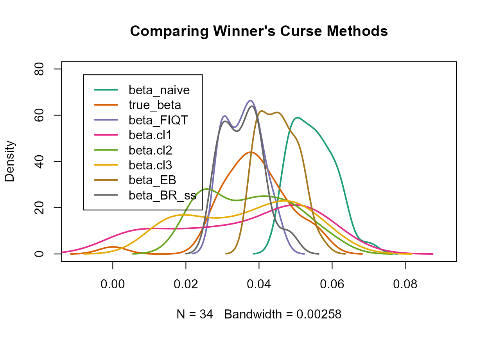

beta estimateswinners_curse_methods.Rmd
library(winnerscurse)In order to demonstrate how this package can be used to obtain new adjusted \(\hat\beta\) estimates, we first create a toy data set and subsequently, illustrate how a user could engage with each of the package’s functions using this data set. The methods currently available for implementation are:
An important feature which distinguishes these four methods is detailed in the table below:
| Adjusts \(\beta\) estimate of only SNPs with \(p\)-values less than specified threshold, \(\alpha\) | Adjusts \(\beta\) estimate of all SNPs |
|---|---|
|
|
We wish to generate summary statistics for 1 million SNPs, in which there exists a polygenic background of 10,000 SNPs while all others have no effects.
We specify:
With these specifications, we can obtain quite realistic summary statistics as shown below.
The summary statistics have been arranged here in a suitable way for each method - in the form of a data frame with columns rsid, beta and se.
set.seed(1998)
n_snps <- 10^6
effect_snps <- 10000
n_samples <- 30000
maf <- runif(n_snps,0.01,0.5)
se <- 1/sqrt(2*n_samples*maf*(1-maf))
true_beta <- rnorm(effect_snps,0,1)
h2 <- 0.7 # variance explained by effect SNPs
var_y <- sum(2*maf[1:effect_snps]*(1-maf[1:effect_snps])*true_beta^2)/h2
true_beta <- true_beta/sqrt(var_y) # scaling to represent a phenotype with variance 1
true_beta <- c(true_beta, rep(0,n_snps-effect_snps))
summary_stats <- data.frame(rsid=seq(1,n_snps),beta=rnorm(n=n_snps,mean=true_beta,sd=se),se=se)
head(summary_stats)
#> rsid beta se
#> 1 1 -0.014621130 0.024815677
#> 2 2 0.003692869 0.011860257
#> 3 3 -0.056894722 0.021248309
#> 4 4 -0.023764612 0.025252008
#> 5 5 0.028408413 0.008180033
#> 6 6 -0.001962928 0.009936883The function conditional_likelihood requires a data frame, in the form described above, and a value for alpha, the significance threshold used in the GWAS.
As the conditional likelihood methods have been designed to be only used for SNPs which are deemed significant, the data frame returned contains only SNPs that have \(p\)-values below the inputted genome-wide significance threshold value, alpha.
If no SNPs are detected as significant, the function merely returns the inputted data frame.
The returned data frame has SNPs ordered based on their \(p\)-values from smallest to largest, or equivalently, in descending order of \(\mid z \mid\) in which \(z\) is the estimated value for \(\beta\) divided by its standard error.
We implement the function on our toy data set as follows, choosing a significance threshold of 5e-8:
out_CL <- conditional_likelihood(summary_data = summary_stats, alpha = 5e-8)
head(out_CL)
#> rsid beta se beta.cl1 beta.cl2 beta.cl3
#> 1 3965 0.06065460 0.008195368 0.06007821 0.05867879 0.05937850
#> 2 7815 0.06273957 0.008481947 0.06213728 0.06068079 0.06140904
#> 3 4998 -0.05957379 0.008340589 -0.05853882 -0.05654386 -0.05754134
#> 4 7261 0.05510613 0.008192669 0.05268826 0.04934930 0.05101878
#> 5 6510 0.05623502 0.008394748 0.05361460 0.05007375 0.05184418
#> 6 9917 0.05466573 0.008178854 0.05203302 0.04851799 0.05027550Three columns have been added to the right of the inputted data frame: each represents a correction method suggested in Ghosh et al. (2008). The first, beta.cl1, is referred to as the conditional MLE while the second, beta.cl2, is the mean of the normalized conditional likelihood. The third, beta.cl3 is merely the average of the first two, known as the compromise estimator.
Ghosh et al. (2008) noted that for instances in which the true \(\beta\) value is close to zero, beta.cl2 often has greater mean squared error than beta.cl1 but for true \(\beta\) values further from zero, beta.cl2 performs better. Thus, it was suggested that beta.cl3 be used to combine the strengths of these two estimators. However, this function, conditional_likelihood, outputs values for all three estimators in order to allow the user to make their own decision on which they believe to be the most appropriate.
The function empirical_bayes implements the Empirical Bayes method for correcting for Winner’s Curse, detailed in Ferguson et al. (2013), with a slight modification.
The function has one argument, summary_data, which is the data frame containing rsid, beta and se columns.
It returns this data frame but with a fourth column, beta_EB in which the adjusted estimates of this procedure have been added.
As the Empirical Bayes method makes adjustments to all SNPs, not only those that have been considered significant, this data frame contains all SNPs.
Note: The conditional likelihood methods adjust each statistic one at a time, and so summary statistics of one individual SNP can easily be inputted into the conditional_likelihood function. However, the Empirical Bayes method requires many SNPs as the more information given to the function, the more accurate it will be at modelling the distribution and thus, making adjustments. Thus, if summary_data contains information related to only one SNP, empirical_bayes will merely return the inputted data frame.
Below is a demonstration of using empirical_bayes with our toy data set:
out_EB <- empirical_bayes(summary_data = summary_stats)
head(out_EB)
#> rsid beta se beta_EB
#> 1 3965 0.06065460 0.008195368 0.05127859
#> 2 7815 0.06273957 0.008481947 0.05307172
#> 3 4998 -0.05957379 0.008340589 -0.05054678
#> 4 7261 0.05510613 0.008192669 0.04623384
#> 5 6510 0.05623502 0.008394748 0.04714389
#> 6 9917 0.05466573 0.008178854 0.04580840Unfortunately, the Empirical Bayes estimator described by Ferguson et al. (2013) is known to perform poorly in the extreme tails of the distribution. Therefore, it is quite possible that a lack of adjustment for the \(\beta\) values of SNPs with the most extreme \(z\)-statistics could be witnessed with this method. A somewhat ad hoc approach to overcome this issue of combining the Empirical Bayes and the conditional likelihood methods was suggested by Ferguson et al. (2013).
In order to ensure that shrinkage does occur for the \(\beta\) values of these extreme SNPs, it was decided that the following modification would be added to the empirical_bayes function detailed here. The basis function of the natural cubic spline has been altered so that the boundary knots are no longer the most extreme \(z\)-values. Instead, the lower boundary knot is defined as the \(10^{\text{th}}\) \(z\)-statistic when the \(z\)-statistics lie in increasing order while the upper boundary knot is the \(10^{\text{th}}\) \(z\)-statistic when the \(z\)-statistics have been arranged in decreasing order. The natural cubic spline is then merely linear beyond these boundary knots. This assists in fixing the ‘tails’ issue discussed above. We see that the reduction of the estimated \(\beta\) values for all of the top 6 most significant SNPs has occurred.
The function FDR_IQT implements the winner’s curse adjustment method detailed in Bigdeli et al. (2016).
Similar to the approaches above, the function requires a data frame with three columns rsid, beta and se.
It also has an argument min_pval, for which the default setting is 1e-15. This is included in order to avoid zero \(p\)-values which can prove problematic for the function when evaluating qnorm(). Furthermore, due to the nature of winner’s curse, it is in fact rare that observations with \(\mid z \mid > 8\) are biased.
The function outputs a data frame similar to that inputted with an additional column containing the adjusted estimate, beta_FIQT, and again, the SNPs have been reordered according to their individual \(z\)-statistics.
out_FIQT <- FDR_IQT(summary_data = summary_stats)
head(out_FIQT)
#> rsid beta se beta_FIQT
#> 1 3965 0.06065460 0.008195368 0.04418849
#> 2 7815 0.06273957 0.008481947 0.04573369
#> 3 4998 -0.05957379 0.008340589 -0.04270573
#> 4 7261 0.05510613 0.008192669 0.03783105
#> 5 6510 0.05623502 0.008394748 0.03876418
#> 6 9917 0.05466573 0.008178854 0.03776726Inspired by the winner’s curse adjustment method detailed in Faye et al. (2011), the function BR_ss implements a computationally efficient bootstrap method which is suitable for use with summary statistics.
BR_ss takes a data frame summary_data with three columns: rsid, beta, se, and returns the inputted data frame along with the adjusted estimate for \(\beta\), beta_BR_ss.
\(~\)
Method description:
First, the \(N\) SNPs are arranged according to their naive \(z\)-statistics, \(\frac{\hat\beta}{\text{se}(\hat\beta)}\), in descending order and given rank \(k\). Thus, the SNP with the largest positive original \(z\)-statistic is given rank \(k=1\) while the SNP with the largest negative original \(z\)-statistic receives rank \(k=N\).
Following this, a parametric bootstrap is performed in which a value \(\hat\beta^{\text{b}}_{(k)}\) is simulated for SNP \(k\) from the distribution: \[\hat\beta^{\text{b}}_{(k)} \sim N(\hat\beta_{(k)}, \text{se}(\hat\beta_{(k)})).\] Upon obtaining \(\hat\beta^{\text{b}}\), SNPs undergo a second ordering in which they are arranged based on \(z^{\text{b}}\)-statistics and receive a rank \(A(k)\) accordingly. The \(z^{\text{b}}_{(k)}\)-statistic of SNP \(k\) is equal to \(\frac{\hat\beta^{\text{b}}_{(k)}}{\text{se}(\hat\beta_{(k)})}\).
An estimate for the bias correction value of SNP \(k\) is given as: \[\text{bias}_{(k)} = \frac{\hat\beta^{\text{b}}_{A(k)} - \hat\beta^{\text{oob}}_{A(k)}}{\text{se}(\hat\beta_{A(k)})} = \frac{\hat\beta^{\text{b}}_{A(k)} - \hat\beta_{A(k)}}{\text{se}(\hat\beta_{A(k)})}, \]in which \(\hat\beta^{\text{b}}_{A(k)}\) is the bootstrap value of the SNP ranked in position \(k\) in the second ordering, \(\hat\beta^{\text{oob}}_{A(k)} = \hat\beta_{A(k)}\) is that same SNP’s naive \(\beta\) estimate and \(\text{se}(\hat\beta_{A(k)})\) it’s standard error.
Next, a LOESS curve is fitted to the data in which \(z_{(k)}\)-statistics are considered as the inputs and \(\text{bias}_{(k)}\), their corresponding outputs. As we are often dealing with very large numbers of SNPs, a LOESS curve is only fitted for the most significant SNPs. The BR_ss function currently fits one LOESS curve for the SNPs ranked in the top \(1\%\) of positions and another one for those ranked in the bottom \(1\%\). A linear regression is used for all other SNPs. The predicted values from this process provides \(\text{bias}^{*}_{(k)}\) for each SNP. Using \(\text{bias}^{*}_{(k)}\) instead of \(\text{bias}_{(k)}\) results in a faster approach with increased accuracy as only one bootstrap iteration for each SNP is sufficient for competitive performance.
Finally, the new estimate for \(\beta\) for SNP \(k\) is defined as follows: \[\hat\beta_{(k)}^{*} = \hat\beta_{(k)} - \text{se}(\hat\beta_{(k)}) \cdot \text{bias}^{*}_{(k)}.\]
out_BR_ss <- BR_ss(summary_data = summary_stats)
head(out_BR_ss)
#> rsid beta se beta_BR_ss
#> 1 3965 0.06065460 0.008195368 0.05144091
#> 2 7815 0.06273957 0.008481947 0.05318579
#> 3 4998 -0.05957379 0.008340589 -0.04327338
#> 4 7261 0.05510613 0.008192669 0.04277757
#> 5 6510 0.05623502 0.008394748 0.04346218
#> 6 9917 0.05466573 0.008178854 0.04214637As we have simulated our data set, we have the ability to quantify the amount of bias present in the original naive \(\beta\) estimates and also, in our adjusted estimates for each method. We can use measures such as the sum of squared differences and mean of absolute differences to assess this bias. First, we take a look at the conditional likelihood method as follows, in which only SNPs that are originally deemed significant are included:
sq_diff_1 <- data.frame(naive = sum((true_beta[out_CL$rsid] - out_CL$beta)^2), beta.cl1 = sum((true_beta[out_CL$rsid] - out_CL$beta.cl1)^2), beta.cl2 = sum((true_beta[out_CL$rsid] - out_CL$beta.cl2)^2), beta.cl3 = sum((true_beta[out_CL$rsid] - out_CL$beta.cl3)^2))
sq_diff_1
#> naive beta.cl1 beta.cl2 beta.cl3
#> 1 0.01315662 0.01101162 0.004883232 0.007294572
mean_abs_diff_1 <- data.frame(naive = mean(abs(true_beta[out_CL$rsid] - out_CL$beta)), beta.cl1 = mean(abs(true_beta[out_CL$rsid] - out_CL$beta.cl1)), beta.cl2 = mean(abs(true_beta[out_CL$rsid] - out_CL$beta.cl2)), beta.cl3 = mean(abs(true_beta[out_CL$rsid] - out_CL$beta.cl3)))
mean_abs_diff_1
#> naive beta.cl1 beta.cl2 beta.cl3
#> 1 0.0165569 0.01499394 0.00962575 0.01214906For both quantities, the values for all three conditional likelihood methods are less than that of the naive estimate.
Next, we investigate the other three methods described above which take into account all SNPs, not just those with \(p\)-values less than a specified threshold.
sq_diff_2 <- data.frame(naive = sum((true_beta[out_EB$rsid] - out_EB$beta)^2), beta_EB = sum((true_beta[out_EB$rsid] - out_EB$beta_EB)^2), beta_FIQT = sum((true_beta[out_FIQT$rsid] - out_FIQT$beta_FIQT)^2), beta_BR_ss = sum((true_beta[out_BR_ss$rsid] - out_BR_ss$beta_BR_ss)^2))
sq_diff_2
#> naive beta_EB beta_FIQT beta_BR_ss
#> 1 155.8134 1.840767 1.867324 15.14471
mean_abs_diff_2 <- data.frame(naive = mean(abs(true_beta[out_EB$rsid] - out_EB$beta)), beta_EB = mean(abs(true_beta[out_EB$rsid] - out_EB$beta_EB)), beta_FIQT = mean(abs(true_beta[out_FIQT$rsid] - out_FIQT$beta_FIQT)), beta_BR_ss = mean(abs(true_beta[out_BR_ss$rsid] - out_BR_ss$beta_BR_ss)))
mean_abs_diff_2
#> naive beta_EB beta_FIQT beta_BR_ss
#> 1 0.009103713 0.0002069327 0.0002557444 0.002788049Again, we see that in both cases, the value associated with the naive estimate is greatest. This assures us that the new adjusted estimates provided by each method are indeed less biased than the original \(\beta\) estimate.
Finally, we can compare the performance of all methods for the SNPs with raw \(p\)-values less than 5e-8.
out_EB_sig <- out_EB[2*(1-pnorm(abs(out_EB$beta/out_EB$se))) < 5e-8,]
out_FIQT_sig <- out_FIQT[2*(1-pnorm(abs(out_FIQT$beta/out_FIQT$se))) < 5e-8,]
out_BR_ss_sig <- out_BR_ss[2*(1-pnorm(abs(out_BR_ss$beta/out_BR_ss$se))) < 5e-8,]
sq_diff_3 <- data.frame(naive = sum((true_beta[out_CL$rsid] - out_CL$beta)^2), beta.cl1 = sum((true_beta[out_CL$rsid] - out_CL$beta.cl1)^2), beta.cl2 = sum((true_beta[out_CL$rsid] - out_CL$beta.cl2)^2), beta.cl3 = sum((true_beta[out_CL$rsid] - out_CL$beta.cl3)^2), beta_EB = sum((true_beta[out_EB_sig$rsid] - out_EB_sig$beta_EB)^2), beta_FIQT = sum((true_beta[out_FIQT_sig$rsid] - out_FIQT_sig$beta_FIQT)^2), beta_BR_ss = sum((true_beta[out_BR_ss_sig$rsid] - out_BR_ss_sig$beta_BR_ss)^2))
sq_diff_3
#> naive beta.cl1 beta.cl2 beta.cl3 beta_EB beta_FIQT
#> 1 0.01315662 0.01101162 0.004883232 0.007294572 0.005316499 0.003634958
#> beta_BR_ss
#> 1 0.003312614
mean_abs_diff_3 <- data.frame(naive = mean(abs(true_beta[out_CL$rsid] - out_CL$beta)), beta.cl1 = mean(abs(true_beta[out_CL$rsid] - out_CL$beta.cl1)), beta.cl2 = mean(abs(true_beta[out_CL$rsid] - out_CL$beta.cl2)), beta.cl3 = mean(abs(true_beta[out_CL$rsid] - out_CL$beta.cl3)), beta_EB = mean(abs(true_beta[out_EB_sig$rsid] - out_EB_sig$beta_EB)), beta_FIQT = mean(abs(true_beta[out_FIQT_sig$rsid] - out_FIQT_sig$beta_FIQT)), beta_BR_ss = mean(abs(true_beta[out_BR_ss_sig$rsid] - out_BR_ss_sig$beta_BR_ss)))
mean_abs_diff_3
#> naive beta.cl1 beta.cl2 beta.cl3 beta_EB beta_FIQT
#> 1 0.0165569 0.01499394 0.00962575 0.01214906 0.009191089 0.007023357
#> beta_BR_ss
#> 1 0.006779887\(~\) \(~\)
In addition, we can gain a visual insight into the adjustments made by these functions by plotting the adjusted absolute values along with the naive estimates and the true absolute \(\beta\) values of SNPs which are originally deemed as significant, i.e. those with raw \(p\)-values less than 5e-8, as follows:
library("RColorBrewer")
col <- brewer.pal(8,"Dark2")
plot(density(abs(out_EB_sig$beta)),ylim=c(0,80),xlim=c(-0.01,0.09),main="Comparing Winner's Curse Methods",col=col[1],lwd=2)
lines(density(abs(true_beta[out_CL$rsid])),col=col[2],lwd=2)
lines(density(abs(out_FIQT_sig$beta_FIQT)),col=col[3],lwd=2)
lines(density(abs(out_CL$beta.cl1)),col=col[4],lwd=2)
lines(density(abs(out_CL$beta.cl2)),col=col[5],lwd=2)
lines(density(abs(out_CL$beta.cl3)),col=col[6],lwd=2)
lines(density(abs(out_EB_sig$beta_EB)),col=col[7],lwd=2)
lines(density(abs(out_BR_ss_sig$beta_BR_ss)),col=col[8],lwd=2)
legend(-0.008, 77.5, legend=c("beta_naive", "true_beta","beta_FIQT","beta.cl1","beta.cl2","beta.cl3","beta_EB", "beta_BR_ss"),
col=col,lty=1,lwd=2)
\(~\) \(~\)
TO DO:
empirical_bayes and number of SNPs used in loess in BR_ss?